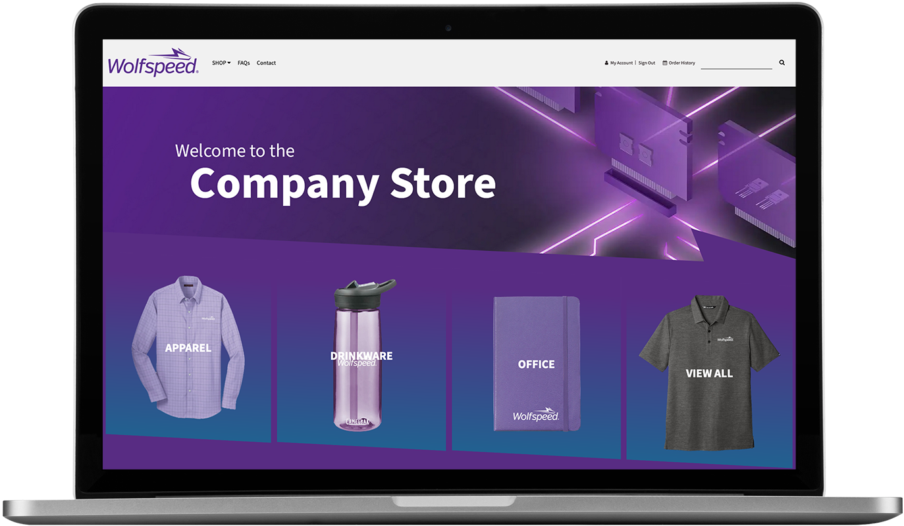

More Projects
Below are several websites I designed and worked on in different ways, with clients Wolfspeed, Avalara, Weaver, Vertex, and Captrust.
Home Screens

- I used product images to show the user a peek into the product selection and to simplify naviagtion
- The jagged section shapes pull from the client's logo design to embrace company branding
- :
- SVGs of each region were used to direct users to their home site: Americas, Europe, or India
- Special care had to be taken when designing these to not misrepresent or offend any cultures
- :
- Cards animate to show two-tone background to match company logo
- Animations were added because the client said "the home page needed something more"
- :
Animations
- Client wanted to emphasize the societal impact of the products in the store
- We made three categories based on each type of impact: Diverse Businesses, Sourced Sustainably, and Give Back and Pay It Forward
- :
- Each product was designated a custom icon matching its impact type
- The icons are dynamically populated and assigned
- :
Diverse Businesses
Give Back and Pay It Forward
Sourced Sustainably
- The icons were originally JPEGs which I recreated as SVGs to provide flexibility when animating
- Each animation coincides with the meaning of its corresponding societal impact
- :
- This store only offers bundles of products, rather than individual products, so custom icons provided a way to distinguish each bundle for the user
- :
- Each icon is a custom SVG I designed and animated
- The icons' style are in accordance with assets on the client's company website
- I was afforded a lot of creative freedom with the home page and wanted to have some fun
- :
- A modal pops up on page-load to provide users with all necessary info and purchasing instructions
- :